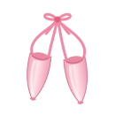

Hakkımda
Merhaba! Ben Zeynep. Küçük köşeme hoş geldin :)
- İsim
- Zeynep
- Okul
- Işık Lisesi
- Tutku
- Bale
- Kedi
- Leo (smokin!)
~ Bale ~

Uzun yıllar bale yaptım. Hayatımın en güzel parçalarından biri oldu; o yüzden burada ara ara ondan da bahsedeceğim.
~ Okul ~
Işık Lisesi'nde okudum. O yıllardan kalan anılar da bu sayfalarda yer bulacak.
~ Leo ~
Evimin en şık üyesi Leo! Smokin bir kedi: siyah frakı ve bembeyaz gömleğiyle her an bir davete gidecekmiş gibi duruyor.